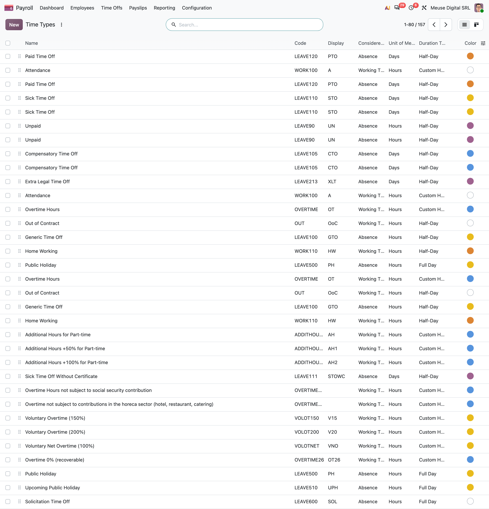
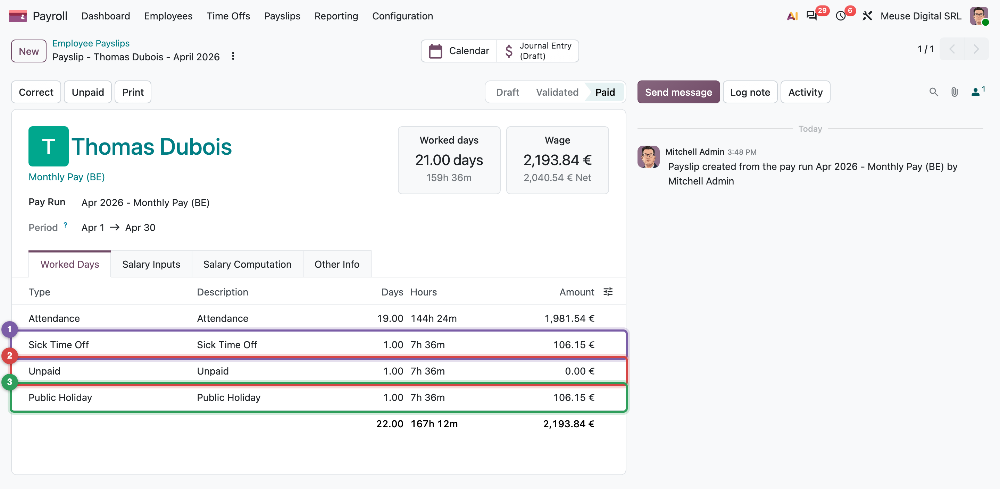
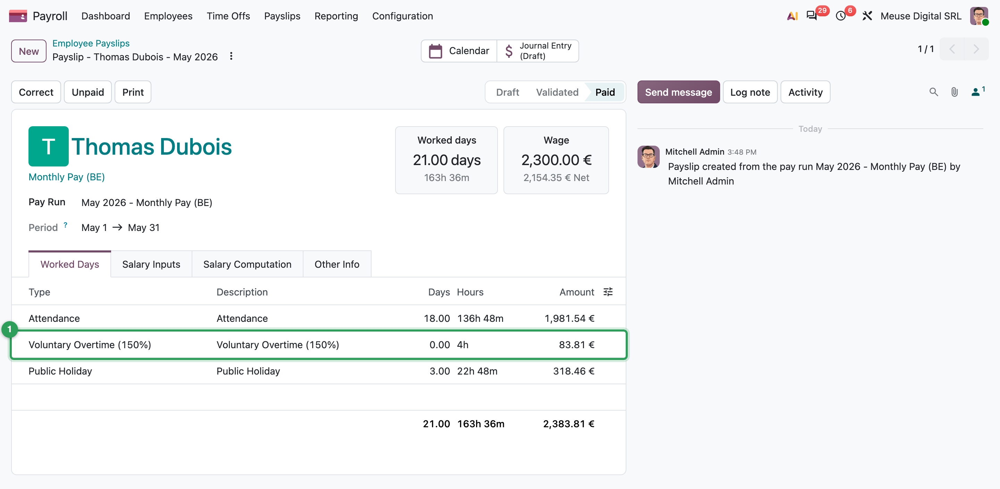
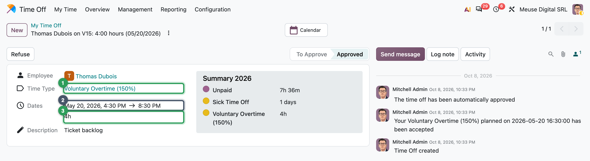

Time: schedules, time off, worked days
How a calendar and a leave request become paid and unpaid days on a payslip
- Read a working schedule and compute the hours of a month from it
- Explain what a time type is and which of its fields change pay
- Follow time off and public holidays into generated work entries, then into worked-days lines
- Explain how a localization values an absence, with Jurgen's April as the example
- Record sick days, unpaid days, leave and overtime so that the payslip is right without typing a number
Jurgen was ill on 14 April and took an unpaid day on 24 April; April also has Easter Monday. His payslip must show 19 days of work, a paid sick day, an unpaid day and a paid holiday, and nobody types those numbers. They come from his schedule (what he was expected to work), his time off (what he did not) and the time types that say how each hour is paid.
How time becomes pay
A monthly salary is not paid "for the month": Odoo pays it day by day, according to what each day was. This chapter follows one month, Jurgen's April 2026, through the three steps below.
unpaid day on 24 April
- What Odoo knows. The working schedule says which days and hours were expected. Public holidays and approved time off say what happened instead.
- Work entries. For each expected day, Odoo derives one work entry with a time type: worked, public holiday, sick, unpaid. Nobody types them, and they are not stored: Odoo computes them again whenever a payslip needs them, so a late change of time off is never forgotten.
- Worked days. The payslip groups the entries by type into worked-days lines. Each type says whether it is paid, so the unpaid day is worth 0, and the total of the lines is the basic salary. The rules then compute everything else from it.
Working schedules
A working schedule (resource.calendar) lists the weekly attendance slots. It says which hours were expected, and is the denominator when a wage is cut into hours. MyVidangeCompany's Standard 38 hours/week runs Monday to Friday, 8:00–12:00 and 12:30–16:06: 7.6 hours a day, so 167.2 expected hours in April 2026 (22 weekdays, Easter Monday included).
Public holidays are closure days: leaves of the whole company, with the time type Public Holiday.
Time types
Every hour of the month has a kind: worked, sick, holiday, unpaid. A time type (hr.work.entry.type) names that kind and says how it is paid. Time off types and schedules point to it, and each worked-days line of the payslip is one time type.
worked_days['LEAVE110']
Common pitfall: the same name twice
Paid Time Off, Sick Time Off, Unpaid and Public Holiday each appear twice: one generic row, one Belgian. Before you edit one, add the Country column to the list and pick your company's country.
Time off
Payroll only uses the result of the Time Off app: an approved request becomes a leave on the employee's calendar, with its time type. Paid leave consumes an allocation (20 days a year at MyVidangeCompany); sick and unpaid days do not.
stateDiagram-v2
[*] --> normal : approved
normal --> done : a regular payslip used it
normal --> blocked : its month is already validated
blocked --> normal : the payslip is corrected or refunded
done --> [*]The payroll status of a leave (payslip_state) protects validated months. A leave approved after its month was validated is blocked: a dashboard card says Time Off missing from period's payslip, the Deferred Time Off responsible (Chapter 12) is warned, and you correct that month's payslip (Mission 15.2).
Work entries are generated, not stored
A work entry is "this employee, this day, this time type, this many hours". Odoo does not store them: hr.version generates them whenever a payslip needs its worked days.
7.6 h
7.6 h
7.6 h
7.6 h
7.6 h
One week of Jurgen's April. Odoo starts from what the schedule expects (1), lays the approved time off and public holidays over it (2), and what remains is attendance (3). Each day gets one entry per kind of time, with its hours.
- An absence counts the scheduled hours, not the clock: a full sick day on a 38-hour week is 7.6 hours.
- Overlaps have a winner. A public holiday beats a personal leave on the same day, unless the localization lists the leave as taking precedence (in Belgium: long sickness, parental leave, unpaid…).
Because nothing is stored, a draft payslip always follows today's data. Only validated payslips are frozen.
From work entries to worked days
The payslip groups the entries by time type, converts hours to days with the schedule, and writes one worked-days line (hr.payslip.worked_days) per type, with an amount.

| Line | Days | Hours | Amount (€) |
|---|---|---|---|
| WORK100 Attendance | 19 | 144.4 | 1,981.54 |
| LEAVE110 Sick Time Off | 1 | 7.6 | 106.15 |
| LEAVE90 Unpaid | 1 | 7.6 | 0.00 |
| LEAVE500 Public Holiday | 1 | 7.6 | 106.15 |
| Basic salary | 22 | 167.2 | 2,193.84 |
The generic engine values each line at wage ÷ hours of the month × hours × pay rate. A localization may replace that convention. The Belgian one values every non-attendance line at a fixed hourly rate and gives attendance the rest of the wage, so one missing day always costs the same.
In Belgium
The fixed hourly rate is wage × 3 ÷ (13 × weekly hours): 2,300 × 3 ÷ (13 × 38) = 13.97 € for Jurgen, so 7.6 hours are worth 106.15 € and his basic salary is 2,300.00 − 106.16 = 2,193.84 €. Chapter 5 compares the proration methods.
Yannick's March works the same way: the 8 days before his start become an unpaid OUT line (Out of Contract).
Overtime is a time type too
Overtime is a working-time type with a pay rate above 100 %, here Voluntary Overtime (150%) (VOLOT150), entered as a time off request of that type. It reads oddly, but it is the same mechanism.

VOLOT150, which adds it to gross pay.
Around the world
- Belgium: 143 time types, because each absence has its own social security code.
- Philippines: 50 (night shifts, rest days, holiday premiums).
- Australia, Switzerland: 31 and 25.
- United States: 12.
- Netherlands, India, France: about 10 each.
In practice: fix time at the source
If a worked-days line is wrong, fix the leave, the schedule or the version and refresh the draft. A hand-edited line stops Odoo from recomputing the worked days, so later changes will not reach it.
Missions
Mission 14.1 · Paid leave for 2026 ★
Situation. Mélanie, Jurgen, Marie and Emma each earned 20 days of paid leave for 2026. Yannick, hired in 2026, earned none.
Your goal. Give the four their 2026 paid leave, valid from 1 January to 31 December 2026.
Check. Four approved allocations of 20 days of Paid Time Off; each employee's Time Off smart button shows 21/21 Days.
Hint
Leave rights are allocations, not requests. The 21st day is Odoo's compensation for 15 August 2026, a Saturday.
Mission 14.2 · Jurgen's sick day and unpaid day ★
Situation. Jurgen is sick on Tuesday 14 April 2026 (flu) and takes an unpaid day on Friday 24 April for personal reasons.
Your goal. Record both absences so that April's payslip reflects them.
Check. Both requests are approved, each 1 day (7.6 hours); Jurgen's counter still shows 21/21 Days.
Hint
Pick the time types whose codes are LEAVE110 and LEAVE90.
Mission 14.3 · Preview April before the pay run ★★
Situation. Before April's pay run, your manager wants to see what Jurgen's absences do to his pay, and how Yannick's first month looks.
Your goal. Create draft payslips for Jurgen (April 2026) and Yannick (March 2026), read their worked days and net, then delete both drafts.
Check. Jurgen, April: attendance 19 days, 1,981.54 €; sick 106.15 €; unpaid 0.00 €; public holiday 1 day; net 2,040.54 €. Yannick, March: attendance 14 days, 2,270.77 €, out of contract 8 days; net 1,818.11 €.
Hint
Payslips > Payslips > New: an employee and a period are enough; Compute Sheet gives the net.
Mission 14.4 · Emma's summer holiday ★
Situation. Emma books her summer holiday from Monday 3 to Friday 14 August 2026.
Your goal. Record the holiday against her 2026 legal leave.
Check. The request is approved for 10 days; Emma's counter shows 11/21 Days.
Hint
Paid Time Off needs an allocation, so the request shows the balance while you type.
Summary
- The schedule says which hours were expected; MyVidangeCompany's has 7.6 hours a day, 167.2 hours in April 2026.
- A time type is the single record behind leave types, schedule slots and worked-days lines; its code, pay rate and categories decide the money.
- Approved time off and public holidays become leaves on the calendar; a leave that arrives after its month was validated is blocked until the payslip is corrected.
- Work entries are generated on demand and never stored; absences count scheduled hours; overlaps follow a precedence.
- Worked-days lines carry days, hours and amounts; a localization decides how absences are valued (Belgium: a fixed 3/13 hourly rate).
- Fix time at its source and refresh the draft; never hand-edit a worked-days amount.